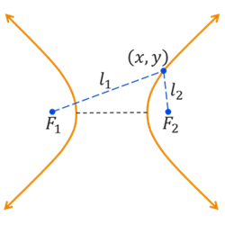
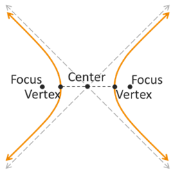

Hyperbolas
Conic Sections
Conic Sections
The standard equation and many of the properties of ellipses will look very similar to the equation and properties of hyperbolas. Let's look at what a hyperbola is and what its equation looks like. Then we can look at a few examples.
A hyperbola is a curve formed by all points where the difference of the distances to two fixed points called foci (plural of focus) is constant.
In the illustration above, the two distances between the point \((x,y)\) and the two foci are represented by the variables \(l_1\) and \(l_2\). Being a hyperbola means that the difference \(|l_1 - l_2|\) must remain constant. In other words, the individual distances \(l_1\) and \(l_2\) will change as we look at different points \((x,y)\) around the hyperbola, but their difference will always be the same.
In the illustration below, the key points on an hyperbola are marked. The shortest distance between the two curves is called the transverse axis and its endpoints are the vertices. The foci, or focus points, are located along the same line as the transverse axis except they are farther away from the center than the vertices. Each of the two curves passes through one vertex and bends around the corresponding focus point. As the two curves extend farther away from the center, they will approach one of two asymptotes that have opposite slope (same value but opposite sign) and pass through the center.
Use the following graph to explore the shape and key property of ellipses. Select the Hyperbola option and then drag the blue point to explore the graph's characteristics.
The equation of a hyperbola has two forms, depending on whether the hyperbola is oriented vertically or horizontally. The orientation is determined by the direction of the transverse axis.
The standard conic equations of a ellipse with center at the origin have the following form.
Assuming that both \(a,b > 0\), the vertices are located at \((\pm a,0)\) and the foci are at \((\pm c,0)\). The transverse axis has a length of \(2a\). The distance between the foci is \(2c\). The rectangular box passing through the vertices with corner points on the asymptotes will have a width of \(2a\) and a height of \(2b\). The slopes of the asymptotes are \(m = \pm \frac{b}{a}\).
Assuming that both \(a,b > 0\), the vertices are located at \((0,\pm a)\) and the foci are at \((0,\pm c)\). The transverse axis has a length of \(2a\). The distance between the foci is \(2c\). The rectangular box passing through the vertices with corner points on the asymptotes will have a width of \(2b\) and a height of \(2a\). The slopes of the asymptotes are \(m = \pm \frac{a}{b}\).
The main difference in these two equations is whether the hyperbola is oriented horizontally or vertically, or whether the transverse axis is horizontal or vertical. In the horizontal orientation, the positive fraction contains \(x\) and \(a\) is under the \(x\) variable while \(b\) is under the \(y\) variable. This flips for the vertical hyperbola where the positive fraction contains \(y\) and \(a\) is under \(y\) while \(b\) is under \(x\). The values of \(a\) and \(b\) relate to the stretch of the hyperbola, but can also be related to the dimensions of the rectangular box between the hyperbola curves. The size of this box effects the gap between the curves as well as the sharpness of the curvature.
It might be helpful to think of the values of \(a\), \(b\), and \(c\) as distances, especially when we want to determine the coordinates of the vertices and foci or the slopes of the asymptotes. We use \(a\) to represent the distance from the center to each vertex. Similarly, we use \(c\) to represent the distance from the center to each focus point. These three values, or distances, are related to each other by the equation \(c^2 = a^2 + b^2\).
The key characteristics of a hyperbola in conic form are the coordinates of the center, vertices, and foci as well as the length of the transverse axis and the slope (or equation) of the asymptotes.
We need to be able to write the standard equation of a hyperbola given information about it, such as the location of its foci and vertices or its graph. We also need to be able to sketch a graph of a hyperbola given the equation and identity its key characteristics. Let's look at a few examples.
©2025 M4thG33x (new window) Some Rights Reserved.